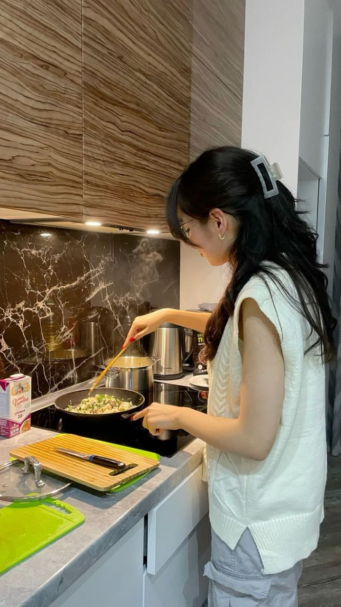
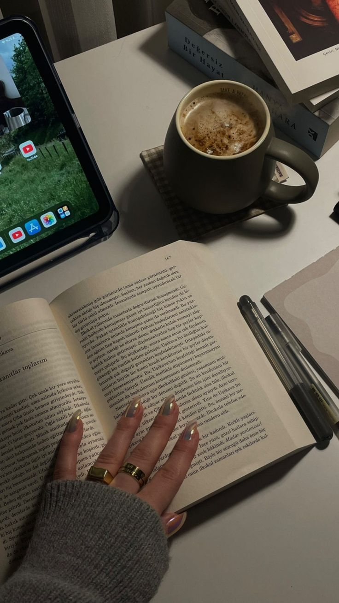
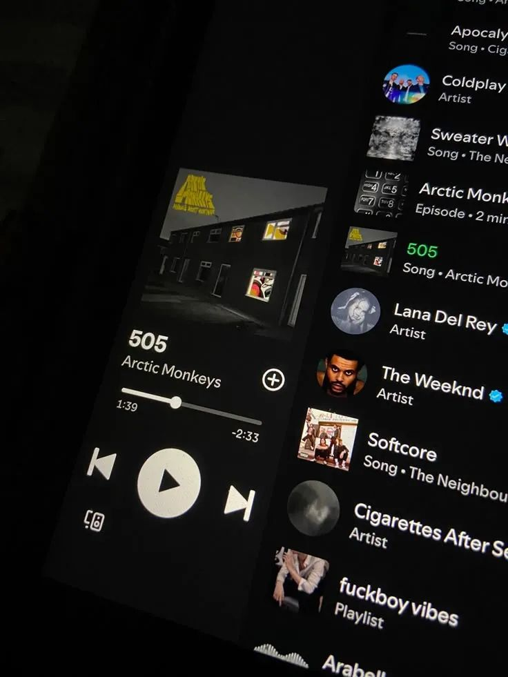

Hobi & Minat
Klik gambar samping untuk eksplorasi konten interaktif!




Minat Saya
Voice Over
Saya memiliki minat dan kemampuan dalam bidang voice over. Saya mampu menyesuaikan karakter suara sesuai kebutuhan, baik untuk konten formal, promosi, maupun edukasi. Suara adalah kekuatan yang bisa menyentuh hati dan memberikan dampak besar bagi pendengar.
Membaca
Suka membaca novel fiksi ilmiah dan pengembangan diri. Membuka wawasan dan imajinasi.
Musik
Mendengarkan musik indie & pop. Musik membantu fokus dan menenangkan hati.
Menonton
Suka drama Korea genre thriller & romance. Cerita yang penuh emosi.
Memasak
Eksperimen resep baru di dapur. Masakan sederhana tapi nikmat.